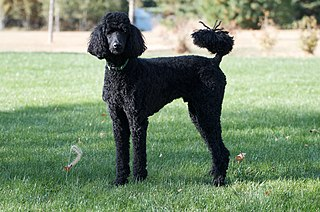

it sits in /pages
Think of your domain name (town.com) as a town,
the directory in which your website is located (/museum) as a museum,
and each page on your website as a room in the museum (/museum/movie_room.html
and /museum/shops/coffee_shop.html).
Relative links like ./shops/coffee_shop.html are directions from the current room (the museum movie room /museum/movie_room.html) to another room (the museum shop).
Absolute links, on the other hand, are full directions including the protocol (https),
domain name (town.com) and the path from that domain name (/museum/shops/coffee_shop.html): https://town.com/museum/shops/coffee_shop.html.
An image doesn´t need a closing element just the img tag
Relative links for images are also possible eg /images/poodle.jpg
